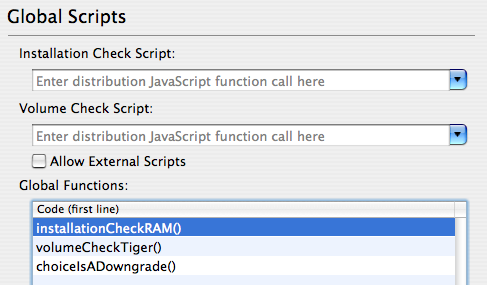
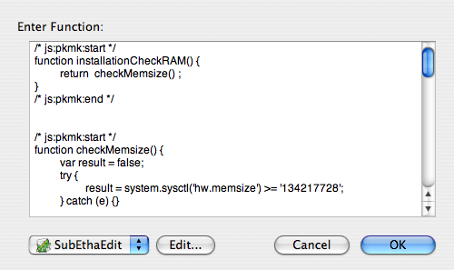
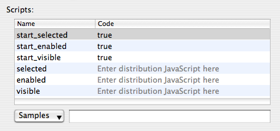

Distribution JavaScript
Distributions are scripted using JavaScript, which is executed in a custom run-time providing JavaScript objects representing choices and the user's system. With the exception of being able to write to the Installer log, these JavaScripts are read-only. For a full description of the objects provided by the run-time, see the Installer Release Notes.
Within PackageMaker, you can specify “Global Functions” which are available to the Installation check, the Volume Check, and scripts on choices, in the “Global Scripts” pane of the user interface. Within this pane, you can also specify which functions to use for the Installation and Volume checks. To specify scripts for choices, select the choice in the “Distribution Details” sidebar and use the table at the bottom of the pane.
 The “Global Scripts” paneThe PackageMaker script editing user interface, accessed by double-clicking on a script, offers several options for editing the script:
- Type in the built-in text view
- Use an external editor of your choice. PackageMaker implements the ODB Editor Suite used by FTP applications to communicate with external editors. PackageMaker can send the script to any editor supporting this suite and when changes are made, they will be sent back to PackageMaker.
- Use the “Requirements Editor”, which provides a “rules” GUI similar to Mail.app. For information on how to use the Requirements Editor, click here.
 The Script Editor sheet
Installation and Volume Check Scripts
You can specify a function to call for the installation check and volume check in the “Global Scripts” pane of the PackageMaker user interface. The installation check is run once for the entire install, while the volume check is run for each volume on the machine.
Both types of scripts should return true to allow install, or false to not allow install. To pass more information back to Installer.app, you can fill in the my.result object. For example:
function installationCheckRAM()
{
if (system.sysctl('hw.memsize') < (128*1024*1024)) {
my.result.type = 'Fatal';
my.result.title = 'Not Enough Memory';
my.result.message = 'You have less than 128MB of RAM.';
return false;
}
return true;
}
This could would cause the installation to fail and tell the user that they do not have enough memory.
The choices object is not available to Installation or Volume check scripts, and the my.target object is only available in Volume check scripts.
Choices Scripts
Scripts placed on choices can be specified by selecting the choice in the “Distribution Details” sidebar and using the table at the bottom of the pane. Edit the scripts by double-clicking on them. Scripts can be placed on the following attributes of choices:
- start_selected: Evaluated when the user chooses to do a “Custom Install”. Determines the initial selected state of the choice.
- start_enabled: Evaluated when the user chooses to do a “Custom Install”. Determines the initial enabled state of the choice.
- start_visible: Evaluated when the user chooses to do a “Custom Install”. Determines the initial hidden state of the choice.
- selected: Evaluated when any change is made to the “Custom Install” pane in Installer.app. Determines the selected state of the choice.
- enabled: Evaluated when any change is made to the “Custom Install” pane in Installer.app. Determines the enabled state of the choice.
- visible: Evaluated when any change is made to the “Custom Install” pane in Installer.app. Determines the hidden state of the choice.
 Editing Choice Scripts
By scripting choices, the package author has complete control over which choices are allowed to be installed with/without other choices and which choices are allowed to be installed on certain types of machines.